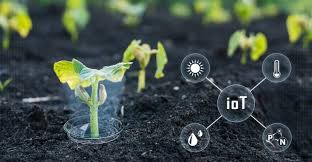

Pessoal, acabei de implementar um sistema de irrigação inteligente na minha plantação de tomates. Os resultados foram impressionantes! 🍅💧
A economia de água foi de 40% e a produtividade aumentou 25%. Alguém mais tem experiência com IoT na agricultura?
